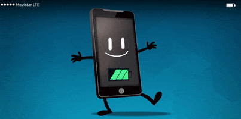

Impacto de usos moviles en la salud
A menudo pasamos un buen rato junto al celular pero ¿esto nos afecta
en nuestro dia a dia? La respuesta es SI ya que por estar juento a el
podremos descuidar algunas actividades que son de nuestro dia a dia y
nuetro rendimiento laboral, academico, social puede desminuir
El uso excesivo o por tiempos prolongados de dispositivos móviles como
teléfonos y tabletas puede generar alteraciones del sueño y del ritmo
circadiano, Unidad de Trastornos del Movimiento y Sueño del Hospital
General “Manuel Gea González”.
Al estar expuestos por tiempos prolongados a pantallas de dispositivos,
disminuye la secreción de melatonina, hormona que regula el ciclo del
sueño y vigilia, y aumenta los niveles de cortisol, hormona del estrés.
Esto impide a la persona dormir de forma adecuada.
el uso excesivo de dispositivos moviles podrian ser las siguientes:
|  |
- Poco sueño.
- Tendinitis.
- Viajar distraído.
- Menos actividad física.
- Problemas de vista.
- Falta de comunicación personal.